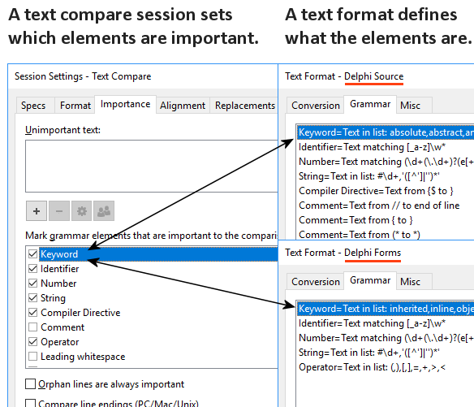

In Beyond Compare beschreiben Dateiformate die Syntax bestimmter Dateiarten, indem Elemente definiert werden. Typischerweise werden Dateiformate, basierend auf der Dateierweiterung, automatisch verwendet.
Eine Textvergleichssitzung definiert, welche Elemente für den Vergleich von Wichtigkeit sind. Beachten Sie, dass sich die Sitzungseinstellungen in einer eher abstrakten Weise mit Elementen befassen, während die verschiedenen Dateiformate Syntaxdetails behandeln.

Um die Standardwichtigkeit eines Elementtyps zu ändern
1.Führen Sie in der Startansicht in der Baumstruktur für Sitzungen unter dem Zweig Neu einen Rechtsklick auf Textvergleich aus und wählen Sie Bearbeiten.
2.Wechseln Sie zum Wichtigkeit-Tab.
3.Setzen oder entfernen Sie die Markierungen der entsprechenden Kontrollkästchen.
4.Drücken Sie Speichern.
Um die Wichtigkeit nur in der aktuellen Textvergleichsansicht zu überschreiben
1.Öffnen Sie Sitzung > Sitzungseinstellungen  und wechseln Sie in den Wichtigkeit-Tab.
und wechseln Sie in den Wichtigkeit-Tab.
2.Setzen oder entfernen Sie die Markierungen der entsprechenden Kontrollkästchen.
3.Wählen Sie aus der aufklappbaren Liste am unteren Rand des Dialoges den Eintrag Nur für diese Ansicht verwenden.
4.Klicken Sie auf OK.
Um die Wichtigkeit in einer Ordnervergleichssitzung zu überschreiben
1.Öffnen Sie aus einer Ordnervergleichssitzung eine Kind-Textvergleichssitzung.
2.Öffnen Sie Sitzung > Sitzungseinstellungen  und wechseln Sie in den Wichtigkeit-Tab.
und wechseln Sie in den Wichtigkeit-Tab.
3.Setzen oder entfernen Sie die Markierungen der entsprechenden Kontrollkästchen.
4.Wählen Sie aus der aufklappbaren Liste am unteren Rand des Dialoges den Eintrag Für alle Dateien innerhalb der Eltern-Sitzung verwenden.
5.Klicken Sie auf OK.